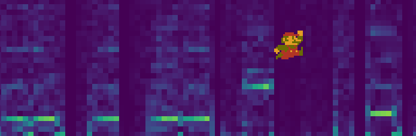
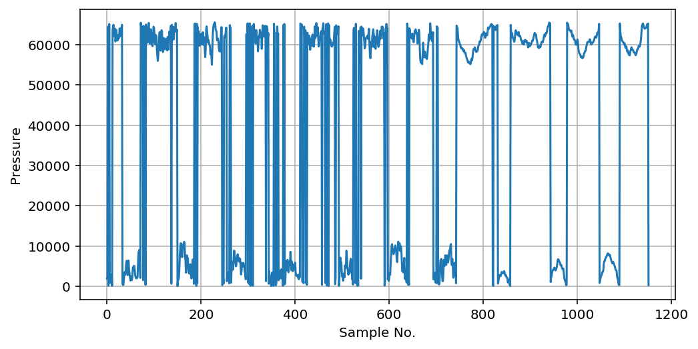
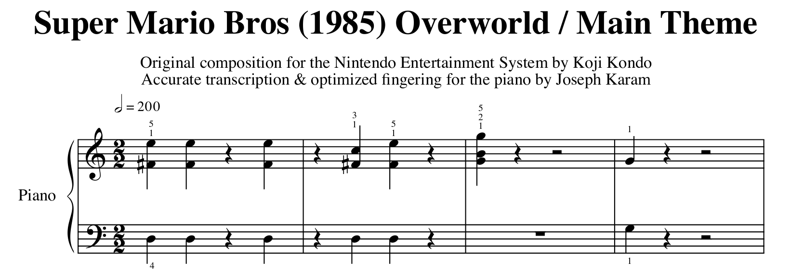
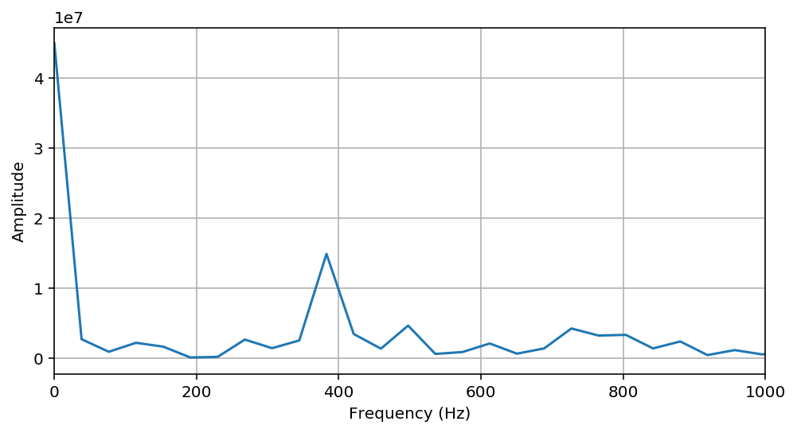
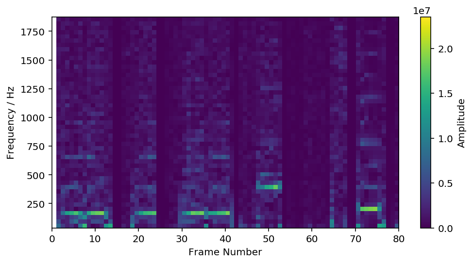
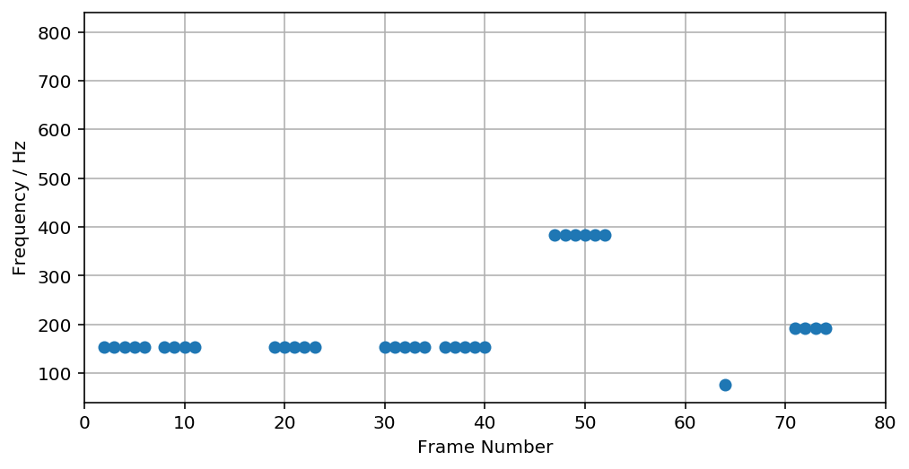
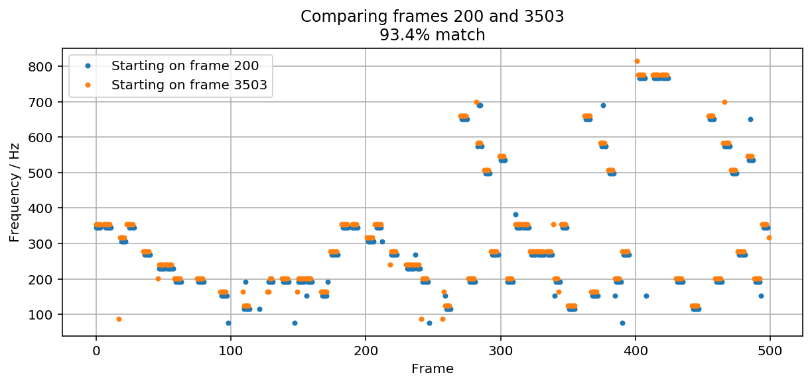

I wrote a Python script that lets you loop .mp3 files seamlessly, forever, based on a loop point determined automatically. This means that you can now listen to your favorite video game music on repeat, forever, sounding just like it does in the game! You can download the script here:
What follows is a longer explanation of why I did this and how it works. If you are interested in ad-hoc online communities for handcrafted video game music extensions, digital signal processing, the Fourier Transform, and Super Mario games, then read on.
I love to listen to video game music - especially in the background while doing other things.
Game music is literally made for looping in the background: it gets used in an environment, like a menu or level, where you have no idea how long the player will spend there, and you don't want it to go eerily quiet after a few minutes, but you also don't want to have any noticeable "break" where the song stops and starts again. So you ideally make something that can loop seamlessly, without an audible pause or "hiccup." Also, it should be catchy to listen to, but not so catchy that it distracts the player from the particular game it is supposed to be supporting. Switch out "playing that particular game" for "doing anything else", and you've got perfect ambient music.
But... how do you listen to it while doing something else? You could leave the game itself on pause, playing the audio. This works great, sometimes: Super Smash Bros. Ultimate has such a huge variety of well-composed music that they literally built a music player into the game - which works especially well because that game was released on a console you can carry around with you.
On the other hand, if you want to listen to the music from Super Mario 64 in the background, you will have to drag around a Nintendo 64 and a TV with you. Also, like many other games, that game will stop the music when you pause it. So "use the game itself" is not always a viable option.
No, if you want to listen to game music outside of a game, you probably buy the soundtrack on a CD or a download, and then play it from your phone or your computer. But that's not always perfect either. When you get a soundtrack, you usually get it as a series of audio files, and they're all probably something like 2 to 6 minutes long. Once the 2 to 6 minutes are through, the music stops, usually after fading out to silence.
That's fine - that's how most recorded music works - but if you love game music partly because it's been fine-tuned to play on repeat forever, then only getting 1 or 2 repeats out of it is a crying shame. It's so much a crying shame, in fact, that a community of people on YouTube has literally emerged around hand-crafting 30-minute extensions of game music. Here is a taste of the collective work put in for literally just the Mario games.
30 minutes is better than 3 for putting it on in the background, but it's still short enough that switching between music tracks can get distracting. (I am not the only one who feels this way! Here's the smaller 10-hour community on Youtube, again just for Mario.) You start running into other issues, too. A 30-minute video is a big thing: it takes a lot of space to store, a lot of Internet traffic to download, and a lot of work to stitch together and upload in the first place. And those difficulties are compounded as the track gets longer, which is why there are much fewer 10-hour tracks than 30-minute ones.
These videos are also frequently reported by the game creators as copyright infringment and summarily taken down. This happened a few months ago to BrawlBRSTMs, one of the first accounts to do it for a lot of music tracks, and people were devastated. (There's also a whole separate issue there, which is getting the music in any form at all when game companies are slow to sell soundtracks, but that is another story.)
Finally... doesn't the whole thing feel strangely sub-optimal? You download the soundtrack, and you listen to the music, and you know it was made to loop seamlessly, and making it loop seamlessly feels like it could be done automatically, but you can't, so you have to resort to handcrafted legally questionable YouTube videos, or to carrying a PlayStation in your backpack or something.
I wanted to make something marginally less hacky than those options. More explicitly, I wanted to make a program which does the following:
Most music, including most recorded video game music, is stored in .mp3 files, so that is the format I've focused on supporting here (at least initially.) Decoding .mp3 files into their raw audio data is not trivial, so I used a separate library called mpg123 along with a Python wrapper to perform the decoding.
The .mp3 file gets decoded into what is called pulse-code modulated audio, or PCM audio for short. PCM is just about as close to "looking at sound" as you can get. That is because all the sounds you hear - from ambulance sirens, to gentle babbling brooks, to video game music - is a series of very gentle changes in the pressure of the air. When you hear sound, those differences in pressure cause your eardrum to wiggle, and your brain performs the translation for you. PCM data is essentially just a digitized stream of those pressure readings collected over time. Here is a taste of raw PCM data from one "frame" of a music track:

To use a very rough analogy, PCM data is to speakers as 1s and 0s are to computer memory: this data (or the near-identical analog version of it) is what actually gets fed directly through speakers or read directly through a microphone, but it's in such a raw form that we don't get much information from looking at it in this state. We need it to be in a more usable format - something looking more like sheet music - and it turns out there is a time-honored way to accomplish that.
When you think of sheet music, you think of something like this:
 (Source: Mario Piano)
The notes move up and down in pitch over time, giving us a familiar melody. If we can read the above PCM data to get the pitches of the notes being played, then we can get something like this sheet music. But if the PCM data is nothing but pressure over time, how do we obtain the pitch from that?
Pitch, it turns out, is how we perceive frequency, and frequency is just how quickly the pressure varies over time. Looking at the PCM data above, you can see that sometimes it changes very quickly after only a few samples, and then sometimes it takes 20 or 30 samples to change. The quicker the pressure changes, the "higher" of a note your brain will hear. (Within a certain range of frequencies, at least.)
So, that is the conceptual relationship, but how do we actually calculate what our frequencies are? The answer is an extremely influential mathematical technique called the Fourier Transform. In short, the Fourier Transform takes a signal like ours and "decomposes" it into the frequencies that make it up. In long... this video from 3Blue1Brown does a great job explaining the way it actually works, and how it applies not just to sound but to other things as well.
But the practical upshot here is that the Fourier Transform will take the above PCM data and transform it into something closer to the following. (Note that I've also narrowed the data to exclude a bunch of high-frequency noise we won't use):

Where before we had pressure over time, now we have pressure (or, more precisely, the "amplitude" of our changes in pressure) over time. That is certainly less busy - and we can see that one frequency, around 400 Hz, seems to be the most prominent. This is all just information from one "frame" of PCM data. If we take a bunch of frames' Fourier transforms and stack them together to see which frequencies dominate or "light up" over time, we get something like this...

...and if you squint, you may recognize the opening notes of the main theme to Super Mario Bros. in there! But you have to squint hard, because there is some noise in this graph from the .mp3 compression, and from the Fourier Transform. We can simplify a bit by filtering out some of the weak noise and then only recording whichever frequency at each frame has the highest amplitude:

That gives us the same overall "shape" as before, but in a simpler form with less data to process. Now we are in a good place to find out where it loops.
Next, now that we have a simplified set of "sheet music"-like points representing the dominant notes in our audio track, we'll compare different sections of it to find out where it best overlaps. There are lots of options for doing this; the method I've found runs reasonably quickly (within a few seconds for typical music tracks) and obtains a good match for most of the songs I test it on, but I suspect that even faster and/or more accurate methods are possible.
The goal is to find two matching "windows" at separate points in the song - a "start" window, and an "end" window. Then, if we get a good match, we can splice the song together so that, when the "end" window is supposed to begin, the program cuts instead to the beginning of the "start" window. If the windows match, the cut will be imperceptible, giving us the loop we want.
The longer the windows, the better we can be sure that we are matching the whole song, and not just one verse of it. But longer windows also take longer for the program to compare, and if our window is too long, we might not catch any matches at all. I've found that a window of 500 frames strikes a good compromise.
So, we walk through the file, checking pairs of 500-frame windows to get as good a match as possible. The "check" in this case uses NumPy's correlation coefficient function:
81 82 83 84 85 86 87 88 89 90 | def sig_corr(self, s1, s2, comp_length):
"""Calculates the auto-correlation of the track (as compressed into
max_freq) with itself, based on sub-samples starting at frames
s1 and s2, each comp_length frames long."""
# np.corrcoef returns an array of coefficients -
# the simple 'R' value is at row 1, col 0
return np.corrcoef(
self.max_freq[s1:s1+comp_length],
self.max_freq[s2:s2+comp_length])[1, 0]
|
The walking itself happens mostly across possible "end" windows: beginning just after the "start" window, we step one frame at a time to the end of the file, checking for better and better matches. We also try different values of the "start" window, just in case the looping portion actually begins late in the song.
110 111 112 113 114 115 116 117 118 119 120 121 122 123 | max_corr = 0
best_start = None
best_end = None
for start in range(200, len(self.max_freq) - test_len,
int(len(self.max_freq) / 10)):
for end in range(start + 500, len(self.max_freq) - test_len):
sc = self.sig_corr(start, end, test_len)
if sc > max_corr:
best_start = start
best_end = end
max_corr = sc
return (best_start, best_end, max_corr)
|
So how does it work out? For the main theme to Super Mario Bros., we find an excellent match:

Once a loop point is found, all that is left to do is play the file. The mpg123 library comes with a playback library, out123, that makes playback as easy as iterating through the frames:
142 143 144 145 146 147 148 149 150 | i = 0
try:
while True:
out.play(self.frames[i])
i += 1
if i == loop_offset:
i = start_offset
except KeyboardInterrupt:
print() # so that the program ends on a newline
|
This will automatically play the file until it hits the looping point, at which point it will jump (hopefully, and usually, imperceptibly) back to the "start" window.
This was my first time working with audio data, and it was really fun. Audio is a challenging data type to work with - there's a lot to learn up front - but it's satisfying to get results out of, and you can do some really interesting stuff.
Right now, this program only supports .mp3 files with 16-bit encoding. If you would love to see other audio formats, or if you find that the script is botching tracks that it should be able to handle, feel free to drop me a line.
At the time of writing, this works on about 90% of the game music I throw at it. The other 10% is largely songs where the looping portion is small or nonexistent; the program needs something to grab on to. But for music which has a nice, long looping period, it seems to do quite well.
I also wondered whether or not it might somehow handle "ordinary" music tracks with a clear beginning and end, so I tried putting in All Star by Smash Mouth. It couldn't find a good loop point.
Some songs weren't meant to go on forever, I guess.